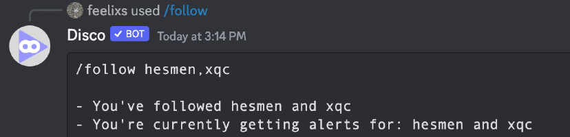

The fast, customizable Twitch-live notification bot.
Discotwitch can be easily configured to monitor multiple Twitch channels and notify your server whenever one goes live.
Simply invite it to your server, and it will guide you through the setup process.
Choose a channel for DiscoTwitch to post on-live notifications in:
Follow Twitch streams to get notified when they go live: 
Visit the Documentation for more info on commands and setup.
Visit the official Discord for help and to report bugs.
Consider leaving a review on top.gg